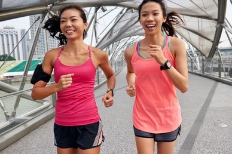
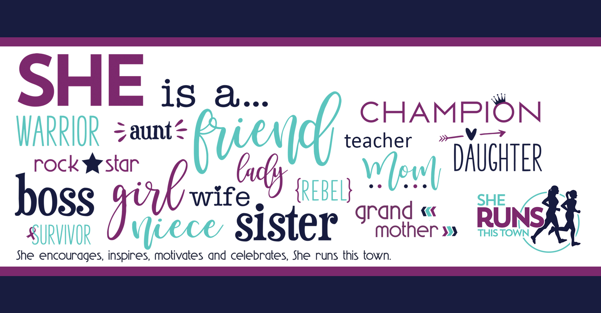
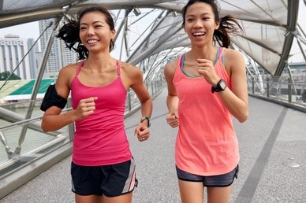
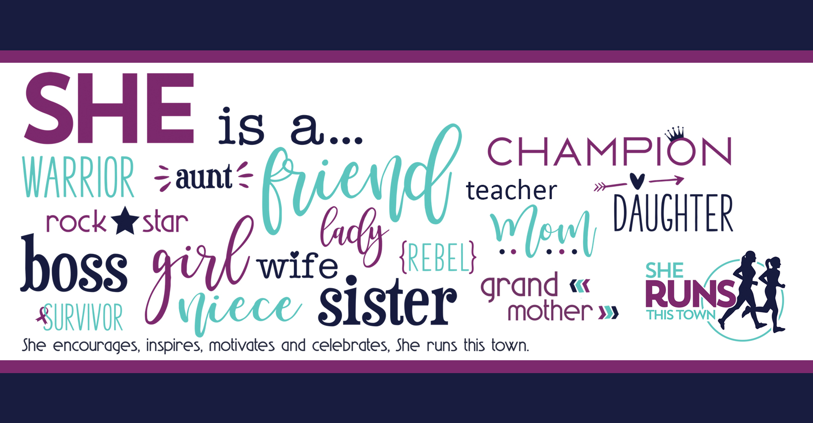

Being motivated is about finding what makes you excited about running. It could be feeling strong, or being able to do something (like a 5k)! It could be social, like joining a group that makes you excited about running- there are community and school groups for running with other passionate runners where all you have to do is show up with your shoes. It could be wanting a break from work, or something consistent to look forward to- and trust me, running can do this for you.
 




This is me! What made me excited about running is seeing an Ironman race for the first time. I watched as hundreds of men and women crossed the finish line at the marathon, completely in awe of their strength. This lit my spark. I was led to find rolemodels like Lucy Charles-Barclay and Shalane Flanagan, an Ironman Champion and Olympic Champion-turned legendary marathon running mom, respectively. Since my first running spark was lit, when I meet people who run, I'm fascinated in their journey.